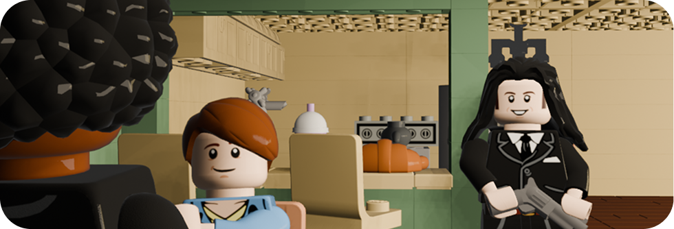
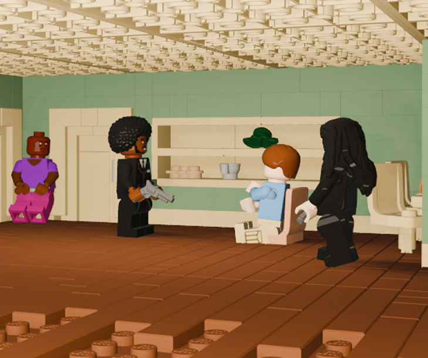

Ezekiel 25:17
в стилистике Lego
Mecabricks
Реализация идеи
Для создания анимационного проекта в Blender мне хотелось выбрать узнаваемую,
культовую сцену из кинематографа, которая могла бы эффектно смотреться в Lego.
Монолог Джулса Уиннфилда из «Криминального чтива» с цитированием Иезекииля 25:17
представляет собой идеальный материал – это яркая сцена с сильным эмоциональным зарядом и характерной для Тарантино напряженностью.
Выбор стилистики Lego был обусловлен тем, что контраст между серьезной,
драматичной сценой и детской эстетикой конструктора создает интересный комический эффект.
В качестве референсов я использовал как оригинальную сцену из фильма, так и официальные Lego-наборы . Также я просмотрел фанатские работы в жанре brickfilms. При помощи них я смог понять, как передать эмоциональность сцены при ограниченных возможностях Lego-фигурок.
Разработка
При создании Джулса я тщательно подобрал подходящую афро-прическу, черный костюм и аксессуары, стараясь максимально приблизить его к образу из фильма, сохраняя при этом узнаваемую эстетику Lego.
После завершения моделирования экспортировал созданные сцены в Blender для последующей анимации.
Особую сложность представляла анимация речи, поскольку стандартные минифигурки не имеют артикулируемого рта. Для усиления драматического эффекта монолога активно использовал возможности анимации движений – характерную для Джулса жестикуляцию с пистолетом, повороты тела и наклоны головы.
Работа с освещением была направлена на создание напряженной атмосферы – я использовал контрастный свет с жесткими тенями, имитирующий операторскую работу Тарантино, но с некоторыми модификациями для сохранения "игрушечного" эффекта.

Итог
Этот проект позволил мне объединить навыки 3D-моделирования, текстурирования, освещения и анимации в Blender.
Результатом стал 40-секундный анимационный ролик, передающий узнаваемую сцену из культового фильма
через призму детского конструктора.
Посмотреть видео.
